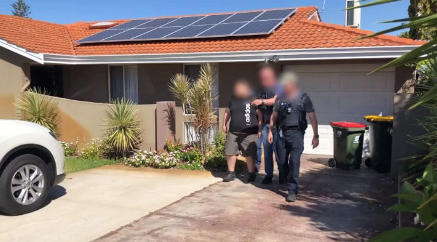
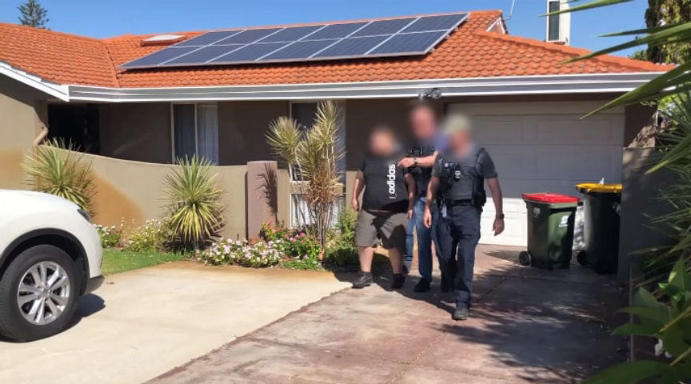

OM: Sentence an IS-Supporting Vendor to Eight Years
~2 min read | Published on 2021-06-12, tagged Child-Porn, Darkweb-Vendor, Drugs, IS-Supporting, Sentenced using 349 words.
The Dutch Public Prosecution Service demanded an eight-year prison sentence for a defendant who sold drugs on the darkweb and spread propaganda for the Islamic State.
The Dutch Public Prosecution Service asked the Rotterdam court to sentence a 35-year-old drug dealer to eight years in prison. The defendant distributed a wide variety of drugs on the darkweb, assisted the Islamic State, and accessed child pornography on the darkweb.

Law enforcement in the Netherlands had identified the defendant as an active supporter of the Islamic State (IS) in 2016. Intelligence services flagged him after he had attempted to take a trip to Syria. According to OM, the defendant is associated with several Twitter accounts responsible for sharing IS propaganda. The nature and content of many chats and other messages from the suspect were IS-related. In addition, audio and video recordings about the violent jihad were played many times in the house where the suspect was staying (in Utrecht). “It called for, among other things, to go to the battle area and to attack unbelievers.”
The defendant, according to the OM press release, published the infamous “Safety and Security Guidelines for lone wolf Mujahideen” guide.
Authorities arrested the man in 2019 for his participation in IS-related activities. During the arrest, law enforcement officers searched the house where the defendant had been staying. They found a laptop during the search that contained incriminating evidence of different crimes. Some of the evidence substantiated the IS-related charges. Investigators found that the defendant had sold drugs on the darkweb from as early as 2012. He had an account on Silk Road as well as a PGP private key (one that was seemingly associated with the Silk Road vendor account but this is not explicit). Between the end of 2012 and the beginning of 2017, the defendant completed 868 transactions through a darkweb marketplace, according to the Public Prosecution Service.
Investigators apparently learned the defendant had searched for child pornography on the darkweb and viewed at least two images.
The court will decide the length of the defendant’s prison sentence in two weeks.
The Dutch Public Prosecution Service asked the Rotterdam court to sentence a 35-year-old drug dealer to eight years in prison. The defendant distributed a wide variety of drugs on the darkweb, assisted the Islamic State, and accessed child pornography on the darkweb.

A picture taken at the scene of the defendant's arrest.
Law enforcement in the Netherlands had identified the defendant as an active supporter of the Islamic State (IS) in 2016. Intelligence services flagged him after he had attempted to take a trip to Syria. According to OM, the defendant is associated with several Twitter accounts responsible for sharing IS propaganda. The nature and content of many chats and other messages from the suspect were IS-related. In addition, audio and video recordings about the violent jihad were played many times in the house where the suspect was staying (in Utrecht). “It called for, among other things, to go to the battle area and to attack unbelievers.”
The defendant, according to the OM press release, published the infamous “Safety and Security Guidelines for lone wolf Mujahideen” guide.
Authorities arrested the man in 2019 for his participation in IS-related activities. During the arrest, law enforcement officers searched the house where the defendant had been staying. They found a laptop during the search that contained incriminating evidence of different crimes. Some of the evidence substantiated the IS-related charges. Investigators found that the defendant had sold drugs on the darkweb from as early as 2012. He had an account on Silk Road as well as a PGP private key (one that was seemingly associated with the Silk Road vendor account but this is not explicit). Between the end of 2012 and the beginning of 2017, the defendant completed 868 transactions through a darkweb marketplace, according to the Public Prosecution Service.
Investigators apparently learned the defendant had searched for child pornography on the darkweb and viewed at least two images.
The court will decide the length of the defendant’s prison sentence in two weeks.